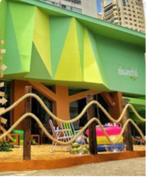

Foi inaugurada o meu cantinho aqui em São Paulo, a @casadesincha!
Ainda tem muita coisa boa por aqui. Workshops, aulões e experiências inesquecíveis. Fique de
olho no
meu feed e garanta seu ingresso.
Ingressos